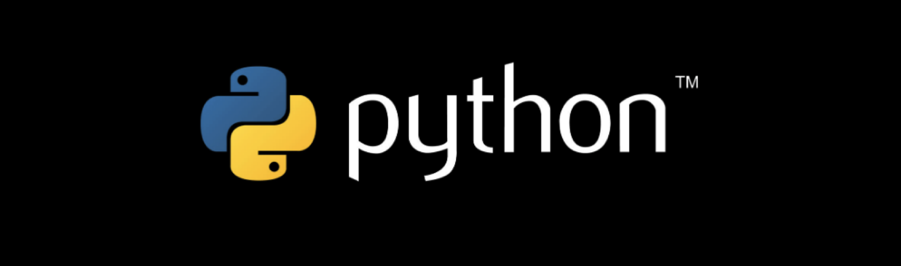

Python es un lenguaje de programación de tipo general que soporta un desarrollo rápido de aplicaciones de análisis de datos. La palabra “Python” es usada para referirse tanto al lenguaje de programación, como a la herramienta que ejecuta los scripts escritos en el lenguaje “Python”


¿Que es python?
Sus principales ventajas son:
- Es gratis
- De código abierto
- Disponible para todas las plataformas más importantes (macOS, Linux, Windows)
- Es mantenido por la Python Software Foundation
- oporta múltiples paradigmas de programación
- Tiene una gran comunidad
- Tiene un rico ecosistema de paquetes de terceros
Entonces, ¿por qué necesitas Python para el análisis de datos?
- Facil de Aprender
- Reproducibilidad
- versatilidad
- Interdisciplinario y extensible
- Gratis y de codigo abierto(FOSS)